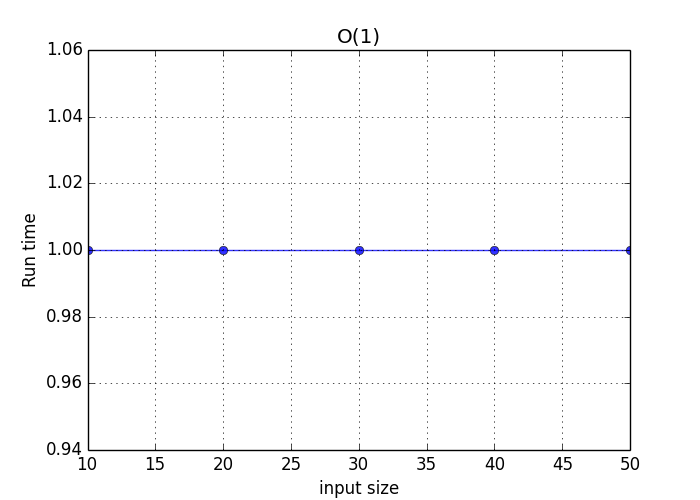
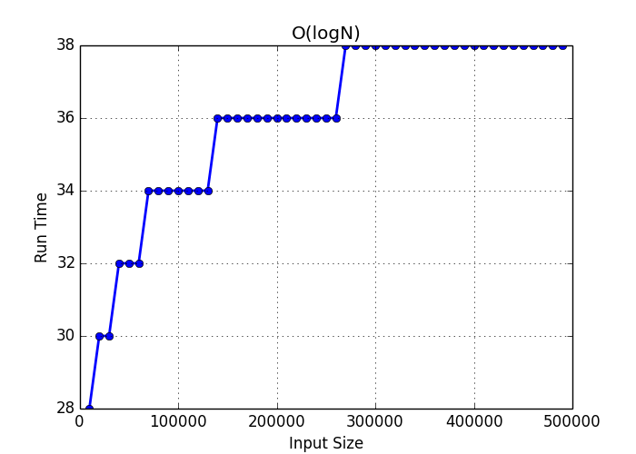
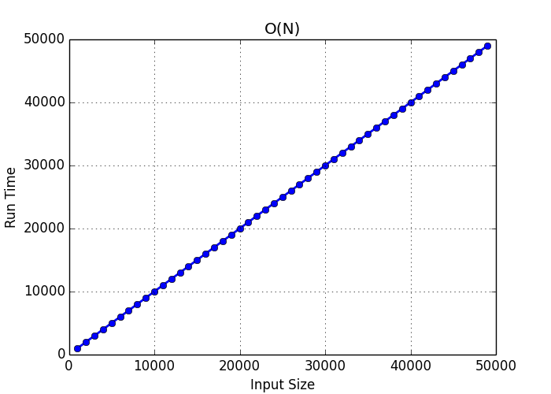
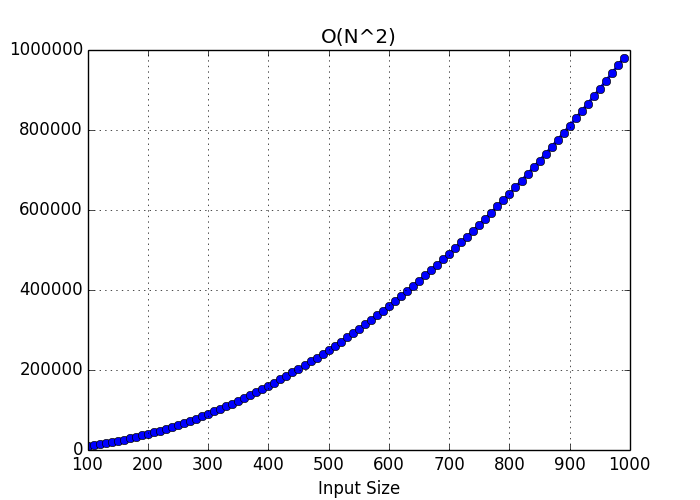
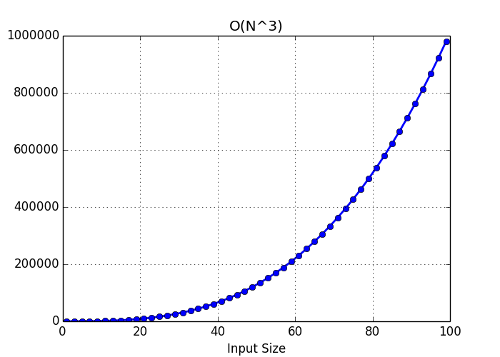

Visualizing Big O notation
From https://mellowd.co.uk/ccie/?p=6122
Author: Darren O’Connor
I’m currently learning as much computer science as I can on the side. I’ve come across Big O notation a few times already, and while I understand it, I’m much more of a visual guy.
It’s rather easy to use Python and matplotlib to graph out how a function’s execution time grows as the size of the input grows. The important thing to note is not total execution time, but rather how the runtime of that function grows in relation to the input size. This can be plotted onto a graph which should give us a nice representation of Big O notations.
Note too that Big O notations always show the worst case. For this reason, I’ll ensure to use values which the function will have to do the most work for.
O(1)
O(1) means constant time. No matter what size the input, the runtime will always be the same. A simple example is finding the middle number in a list. I’ll ensure that all code return the amount of time a command was run in the function. This may make the code look just a bit bloated, but for a good reason.To find the center of a list we simply divide the length of the list in two, and return that number. It does not matter if a list has 10 elements or 100 elements, the same amount of steps is performed:
def O1(input):
count = 0
result = input[len(input) / 2]
count += 1
return count
I have created 5 lists. The first is length 10, the second the length 20, and so on. I’ll get the returned values and plot them.
O(1) plot
As can be seen, it doesn’t matter the size of the input. It will always run at the same constant time.
O(logN)
O(logN) increases as the input size goes up. However, it goes up as a log of the input size. This means that you can exponentially increase your input size, without linearly increasing the processing time to match.
def OlogN(input):
def search(length, count):
count += 1
length /= 2
if length == 1 or length == 0:
return 1 + count
else:
return 1 + search(length, count)
return 1 + search(len(input), 1)
O(logN) plot

The run time is going up but look at the size of the inputs at the bottom. I start with 10,000 and move up to 500,000. The number of steps has increased, but not significantly.
O(N)
O(N) is linear. This means that the run time is linearly matched to the input size. They should increase at exactly the same rate.
def ON(input, check):
count = 0
for number in input:
count += 1
if number == check:
return 1 + count
O(N) plot

There is a 1:1 correlation between input size and run time. As expected this produces a linear graph.
O(N^2^)
O(N^2^)’s runtime will go up as a square of the input size. The runtime goes up faster than your input sizes, so processing time increases rapidly. This is usually when you iterate through multiple loops at the same time like so:
def ON2(input):
count = 0
for i in input:
count += 1
for j in input:
count += 1
return 1 + count
O(N^2^) plot

O(N^3^)
O(N^3^)is merely O(N^2^) with another exponent. I wanted to show the difference by simply changing the exponent.
def ON3(input):
count = 0
for i in input:
count += 1
for j in input:
count += 1
for k in input:
count +=1
return 1 + count
O(N^3^) plot
Graphs increase rapidly as the exponent increases.

Conclusions
I’ve not shown every single type of algorithm, as I just wanted to show the ones I have the most experience with. It’s nice to have a visual representation of these things as it really drills down just how fast your runtime can increase with larger inputs.
You can find my code used over here. https://github.com/mellowdrifter/Blog_Code/tree/master/Big_O
End Of Topic